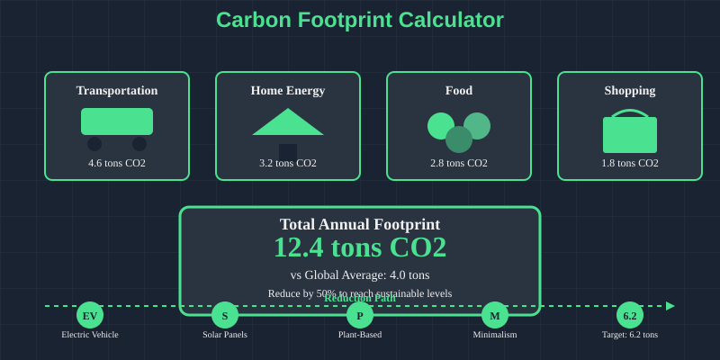

Carbon Footprint Calculator Guide 2026: How to Calculate Your CO2 Impact
Want to understand your environmental impact? With global emissions reaching 42.2 billion tons in 2025, calculating your carbon footprint is the first step toward meaningful climate action. This comprehensive guide shows you how to use carbon footprint calculators effectively and turn your numbers into real reductions.
Why Calculate Your Carbon Footprint in 2026?
The world emits 1,338 tons of CO2 every second. Understanding your personal contribution helps you identify reduction opportunities and join the global climate solution. See the live counter to understand the scale of emissions in real-time.
What is a Carbon Footprint?
Your carbon footprint represents the total greenhouse gas emissions you produce directly and indirectly, measured in tons of CO2 equivalent (tCO2e). This includes everything from driving your car to the food you eat and products you buy.
- Direct Emissions: Transportation, home heating, cooking fuel
- Indirect Emissions: Electricity, food, shopping, services
- Average American: 16 tons CO2e per year
- Global Target: 2-3 tons CO2e per person by 2030
The Math Matters
If everyone reduced their footprint to 3 tons annually, global emissions would drop by 75%. With the carbon budget down to 170 billion tons, individual action has never been more critical.
Types of Carbon Footprint Calculators
Different calculators serve different purposes. Here's how to choose the right one for your needs:
- Quick Calculators: 5-10 minutes, basic estimates
- Comprehensive Calculators: 30-60 minutes, detailed analysis
- Specialized Calculators: Focus on specific areas (travel, home, diet)
- Business Calculators: For companies and organizations
Recommended Calculators for 2026
Look for calculators updated with 2025 emissions factors and regional electricity data. The best calculators account for your location, lifestyle, and recent changes in emissions intensity.
Step-by-Step Carbon Footprint Calculation
Follow this systematic approach to get accurate results from any carbon calculator:
- Utility Bills: 12 months of electricity, gas, heating oil
- Transportation: Annual mileage, fuel efficiency, flight data
- Diet: Weekly food consumption patterns
- Shopping: Major purchases and monthly spending
- Beginner: Start with EPA Carbon Footprint Calculator
- Advanced: Use CoolClimate Network or WWF calculator
- International: Select calculator with your country's data
- Mobile: Try apps like JouleBug or Oroeco
Step 3: Input Your Data Accurately
Be honest and thorough. Most people underestimate their footprint by 20-30%. Include everything from your morning coffee to annual vacation flights.
- Breakdown by Category: Transportation, housing, food, goods
- Comparison: How you rank vs. national average
- Hotspots: Your biggest emission sources
- Trends: How your footprint changes over time
How to Interpret Your Results
Understanding your numbers is crucial for taking effective action:
Carbon Footprint Benchmarks
- 2 tons CO2e: Sustainable target per person
- 4 tons CO2e: Global average
- 8 tons CO2e: European average
- 16 tons CO2e: American average
- 20+ tons CO2e: High impact lifestyle
What Your Numbers Mean
If your footprint is 12 tons, you're responsible for 12/42,200,000,000 of global emissions. While this seems small, 8 billion people making similar reductions would solve the climate crisis.
Top Carbon Footprint Reduction Strategies
Based on 2026 data, here are the most effective ways to reduce your footprint:
- Go Car-Free: Save 4.6 tons CO2e annually
- Switch to Green Energy: Cut home emissions by 80%
- Plant-Based Diet: Reduce food emissions by 70%
- Eliminate Flights: Save 1-2 tons per long-haul flight
- Energy Efficiency: LED bulbs, smart thermostat
- Reduce Food Waste: Save 0.5 tons annually
- Buy Local: Reduce transportation emissions
- Minimalism: Less consumption, lower footprint
The 50% Reduction Challenge
With 170 billion tons remaining in the carbon budget, everyone needs to cut emissions by half by 2030. Start with your highest-impact category first.
Tracking Your Progress Over Time
Regular monitoring ensures your reductions stick and compound:
- Utility Bills: Track electricity and gas usage
- Transportation: Log miles driven, flights taken
- Diet Changes: Note plant-based meal frequency
- Shopping Habits: Track major purchases
Set SMART Reduction Goals
Specific: Reduce electricity by 20% in 3 months
Measurable: Track kWh usage monthly
Achievable: Start with easy wins
Relevant: Focus on your biggest impact areas
Time-bound: Review progress quarterly
Best Tools and Resources for 2026
These tools offer the most accurate calculations and reduction strategies:
- EPA Carbon Footprint Calculator: US-focused, comprehensive
- CoolClimate Network: Detailed consumption analysis
- WWF Footprint Calculator: International coverage
- Carbonfund.org Calculator: Quick and easy
- JouleBug: Gamified sustainability tracking
- Oroeco: Personal carbon tracking
- MyEarth: Simple daily actions
- Capture: Automatic carbon tracking
Your Carbon Journey Starts Now
Calculating your carbon footprint isn't about guilt - it's about empowerment. Every ton of CO2 you reduce helps preserve our shrinking 170 billion ton carbon budget and brings us closer to climate stability.
The Time for Action is Now
With emissions at 1,338 tons per second, individual action multiplied by billions of people creates massive change. Start calculating, start reducing, and join the global climate solution.
- Calculate: Use our recommended calculator this week
- Analyze: Identify your top 3 emission sources
- Plan: Set one specific reduction goal
- Act: Start with your highest-impact change
- Share: Help others calculate their footprints